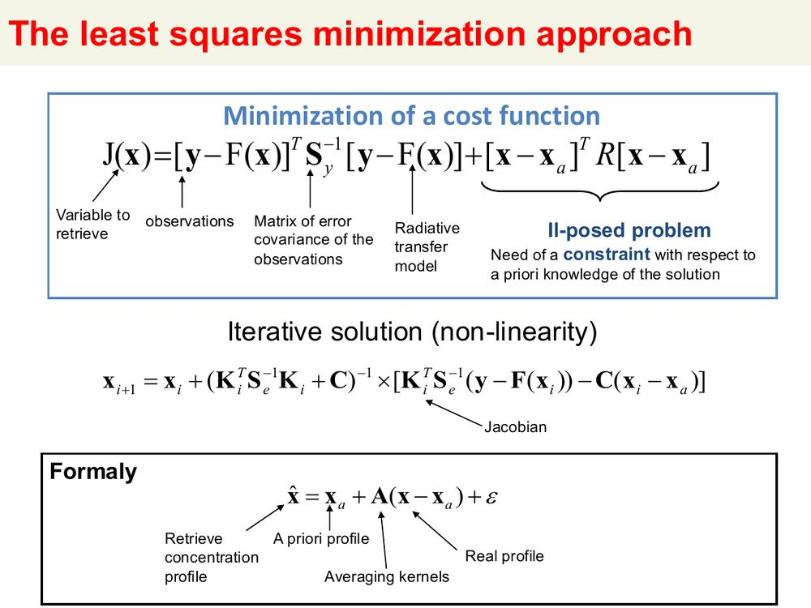
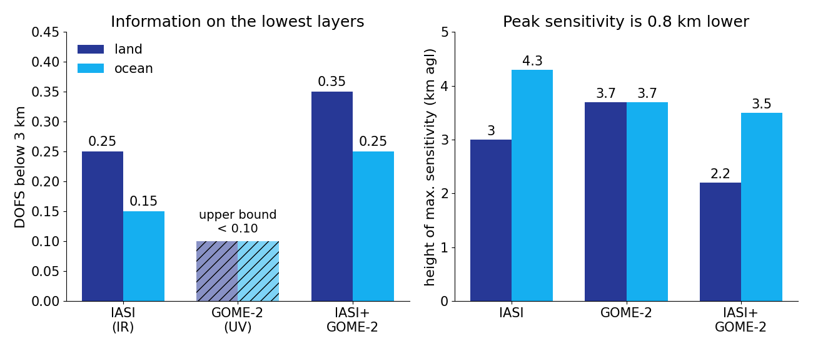

Satellite case studies
Part C · lecture master slides 62, 108–151, 163–205
The least-squares retrieval
J(x) = [y − F(x)]T Sy−1 [y − F(x)] + [x − xa]T R [x − xa]
x̂ = xa + A(x − xa) + ε
- Ill-posed ⇒ constraint toward the a priori
- Non-linear F ⇒ iterate with the Jacobian K
- Inputs: geometry, T and P profiles, spectroscopy
Lecture page: the cost function

Lecture slide 115: minimisation of a cost function, iterative solution and the averaging-kernel relation.
Ozone from space: UV against IR
| Band | Sensitive to | Examples |
|---|---|---|
| UV reflectance | stratosphere, total column | TOMS (1978–), GOME |
| Thermal-IR radiance | free troposphere | IMG, TES, IASI |
| IR + UV together | lowermost troposphere | IASI+GOME-2 |
IASI: 25 km, swath ≈ 2000 km, 0.5 cm⁻¹; GOME-2: 40 × 80 km², ≈ 0.24 nm; two overpasses a day.
IASI+GOME-2: more information near the ground

Lecture slides 144–145: DOFS below 3 km and height of maximum sensitivity (GOME-2 DOFS is an upper bound).
Validation and a pollution episode
- 105 ozonesondes, 10 European stations, summer 2009
- Bias about 1%, RMS 17–22%, R 0.76–0.84 (after AK smoothing)
- August 2009 episode over Europe compared with CHIMERE
- Production: IASI+GOME-2 files since 2017
Absorbing Aerosol Index
Definition
Residual between measured and modelled (aerosol-free) UV reflectance at two wavelengths.
Reading
AAI > 0.5: absorbing aerosol (dust, smoke, ash), mostly elevated layers.
Limit
Depends on SSA, AOD and height: qualitative, not an AOD.
AOD over dark surfaces with look-up tables
- LUT = pre-computed reflectances (aerosol type, geometry, λ)
- Mix fine and coarse models: choose AOD and fine fraction
- Surface from a linear relation with 2.1 µm
- Global mean AOD ≈ 0.15 (550 nm); range 0.05–2
Aerosols in the thermal IR: AEROIASI

Lecture slide 188: auto-adaptive fit of IASI spectra in 12 micro-windows at 8–12 µm.
AEROIASI: results and validation
| Test | Result |
|---|---|
| AOD vs AERONET (13 sites, N = 631) | bias < 1%, R = 0.76, RMS 0.11 |
| Dust height vs CALIOP | bias < 110 m, R = 0.95 |
| March 2008 plume | 2–3 km over Beijing → mixed to the surface |
| CHIMERE | dust stayed in the free troposphere |
Lecture slides 192–198: AERONET, CALIOP and CHIMERE comparisons.
The O₂ A band: AEROS5P
Principle
O₂ is well mixed; a higher scattering layer shortens the path → weaker O₂ absorption.
Product
Fine and coarse aerosol extinction profiles from TROPOMI at 760 nm.
Result
Smoke injected up to 7 km; stable plumes advected.
Exam checklist — Part C
1
J(x) = misfit + constraint; non-linear → iterate with K
2
UV: stratosphere and total column; IR: free troposphere
3
IASI+GOME-2: +40% DOFS (land), ≈ 800 m lower peak
4
AAI > 0.5: absorbing aerosol, not an AOD
5
AEROIASI (8–12 µm) and AEROS5P (O₂ A band): 3D aerosols
Key points
- Joint fits add information
- LUTs make AOD retrieval fast
- Thermal IR and O₂ A band give height
- Validate against sondes, AERONET, CALIOP